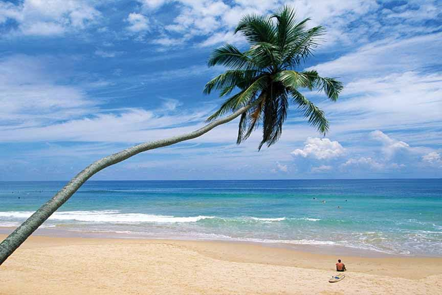

Baththalangunduwa Island - Beach Camping In Sri Lanka

Baththalangunduwa Island: is a small island off the coast of Kalpitiya in the Puttalam District of the North Western Province of Sri Lanka. There are 14 islands. Baththalangunduwa is the second-largest island after Uchchimune and Mohontuwara. Baththalangunduwa Island covers an area of 145.53 hectares. Baththalangunduwa has located about 30.3 km from the mainland. Kalpitiya to Baththalangunduwa: Baththalangunduwa Island is located about 25 nautical miles (30.3 km) from Kalpitiya. It takes about 3.5 hours to travel from Kalapitiya to Baththalangunduwa. You can take a boat ride from Kalpitiya to Baththalangunduwa Island with amazing views. How to reach Baththalangunduwa Island: How to reach here: Two passenger boats ply to the island from the Kalpitiya jetty. The regular passenger ferry service starts daily at 8.30 am. About a three-hour drive. The fare per person is close to 250 rupees. There is also a comfortable passenger transport service with comfortable seating and safety. But for that, you have to reserve seats in advance.
Ridi Viharaya

Ridi Viharaya or Silver Temple is a 2nd-century BCE Theravada Buddhist temple in the village of Ridigama, Sri Lanka. Built during the reign of Dutthagamani of Anuradhapura, the temple is considered as the place where the silver ore, which provided silver to complete Ruwanwelisaya; one of the largest stupa in Sri Lanka, was discovered. According to the chronicles Mahavamsa and Thupavamsa, the Ridi Viharaya complex was built in gratitude for helping him cherish his dream of completing Ruwanwelisaya.
Yapahuwa Rock Fortress

Yapahuwa Rock Fortress is historically one of Sri Lanka’s most important sites. The Sacred Tooth Relic of the Buddha was once found at Yapahuwa and transported to Kandy’s Temple of the Tooth. Nowadays visitors from all over the world visit the Temple of the Tooth in Kandy and it is one of Sri Lanka’s largest tourist attractions. Yapahuwa on the other hand just has a handful of visitors per day. A true hidden gem in Sri Lanka!
Alankuda Beach Road
Today Gangaramaya serves as a place of Buddhist worship and a learning centre. The temple is involved in Buddhist welfare work including old peoples' homes, a vocational school and an orphanage. The temple is uniquely attractive and tolerant of members of many different religions. It has been instrumental in establishing the Buddhist temple on Staten Island (US) the Buddhist Center in New York and the Buddhist Centre in Tanzania, thus helping to propagate the Dhamma in other countries.
Dolukanda Rajamaha Viharaya

Hike will be hard for beginners. (Takes about 1.3hr to reach to top.) Also a nice place if you plan on camping the night. There are ponds at the top but recommend to take enough water to drink. Will be harder to get down under rain, so plan your way down before rains. Also note that you will be entering this hike through a monastery. So no shouting and please don't waste the place with your litter. Safe travels
Kalpitiya Fort

Kalpitiya Fort was built by the Dutch between 1667 and 1676. Kalpitiya was important as it commands the entrance to the adjacent bay, Puttalam Lagoon. The surrounding Puttalam area was one of the major cinnamon cultivation areas in Sri Lanka. The Dutch even constructed a canal from Puttalam via Negombo to Colombo to transport cinnamon from the area.